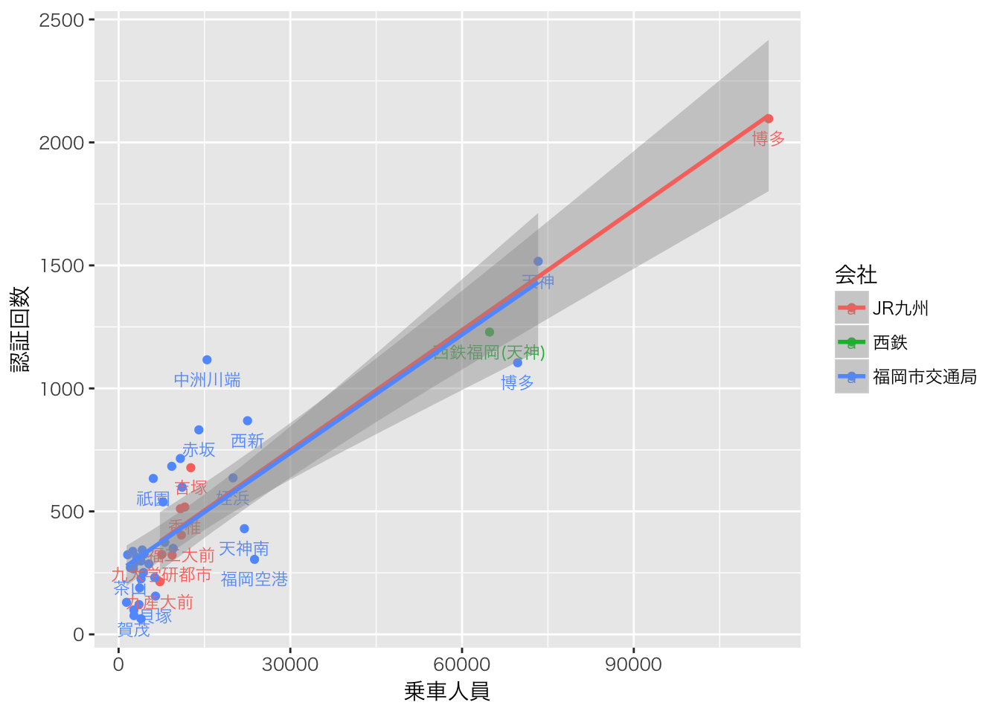

福岡市のCKANに， Fukuoka City Wi-Fi 利用状況という 興味深いデータが掲載されていました。このデータをRで少し触ってみました。
以下のライブラリを使います。
library(readr)
library(data.table)
library(dplyr)
library(ggplot2)データは，Fukuoka City Wi-Fi各拠点の1時間ごとの利用状況（認証回数）のデータです。 2015年8月〜10月の3カ月分のデータが公開されていました（2015年12月22日現在）。
今回は，駅のデータに着目し，駅ごとの Fukuoka City Wi-fi の利用状況と駅の乗車人員との関係 について見てみたいと思います。
まずはデータをダウンロードし，整形します。
filename <- c(
"http://ckan.open-governmentdata.org/dataset/67ac28a6-8e56-466b-957b-c41300da3d58/resource/44b727d5-19ae-4275-bb98-8bd32211a671/download/201408access.csv",
"http://ckan.open-governmentdata.org/dataset/67ac28a6-8e56-466b-957b-c41300da3d58/resource/50c81208-2909-477c-a1f5-6759c2ce5792/download/201409access.csv",
"http://ckan.open-governmentdata.org/dataset/67ac28a6-8e56-466b-957b-c41300da3d58/resource/12e32ad3-1eda-4bc1-a86c-4f5f533e083a/download/201410access.csv"
)
d <- lapply(filename, read_csv, col_types=paste0("cc", paste(rep("i", 25), collapse="")))
d <- rbindlist(d)
d <- d[,1:3, with=FALSE]
colnames(d) <- c("name", "date", "total")
d$name <- iconv(d$name, "sjis", "utf8")
d$date <- iconv(d$date, "sjis", "utf8")
d <- d[d$date=="合計",]
d$station <- grepl("駅$", d$name)
d$name <- sub(" ", " ", d$name)
d$name <- sub("駅$", "", d$name)
d <- d %>% filter(station) %>% group_by(name) %>% summarise(total=sum(total)) %>% as.data.frame()次に福岡市内の鉄道駅の入場者数データ（csv）を読み込みます。 これは，各社のウェブサイトに掲載されている平成26年度駅別乗車人員のデータ （ただし西鉄は乗降人員のデータしか公開されていないので， それを2で割って乗車人員の数字とみなすことにしました）を整理したものです。
fn <- "https://www.dropbox.com/s/d3iwiwx3mzxl02v/passenger.csv?dl=1"
s <- read_csv(fn, col_names=FALSE, col_types="cci")
colnames(s) <- c("company", "station", "passenger")
s$name <- paste(s$company, s$station)データをマージします。 また，Wi-fi 利用状況（認証回数）も1日当たりの数字に直しておきましょう。
d <- merge(d, s, by="name")
d$total <- d$total/92とりあえず散布図を見てみます。 まず，グラフに日本語を表示するためのおまじないから。
old <- theme_set(theme_gray(base_family="HiraKakuProN-W3"))g <- ggplot(d, aes(x=passenger, y=total, label=station, colour=company)) + geom_point() +
geom_text(size=3, vjust=2, check_overlap=TRUE, family="HiraKakuProN-W3") +
labs(x="乗車人員", y="認証回数", colour="会社") + geom_smooth(method="lm")
g
全体としては駅の乗車人員と Fukuoka City Wi-fi の認証回数に正の相関が見られます。 当たり前ですが，駅の乗車人員が多いほど，Wi-fi 利用者も多いようです。
しかし，博多や天神を除けば，図の左下にデータが固まっていますので，対数軸にしてみます。
g + scale_x_log10() + scale_y_log10()博多や天神といった乗車人員の多い駅は，どういうわけか，乗車人員の多さに対して Wi-fi の認証回数が少ないようです。 そこで，1日の平均乗車人員が5万人を超える駅を除いて同じ散布図を書いてみます。
g <- ggplot(filter(d, passenger<50000), aes(x=passenger, y=total, label=station, colour=company)) + geom_point() +
geom_text(size=3, vjust=2, check_overlap=TRUE, family="HiraKakuProN-W3") +
labs(x="乗車人員", y="認証回数", colour="会社") + geom_smooth(method="lm")
gJR九州の駅と福岡市交通局の駅で，回帰直線の傾きが大きく異なります。 また駅に着目すると，乗り換え駅である中洲川端駅で，Wi-fi認証回数が多い一方で， 末端駅である福岡空港駅，天神南駅，橋本駅，貝塚駅では，乗車人員に比べて Wi-fi 認証回数が少ないようにも見えます。
g + scale_x_log10() + scale_y_log10()対数軸にするとこんな感じ。地下鉄空港線と箱崎線，七隈線で傾向が違うような感じもしますが， この差を説明するのは今後の課題ということにしたいと思います。